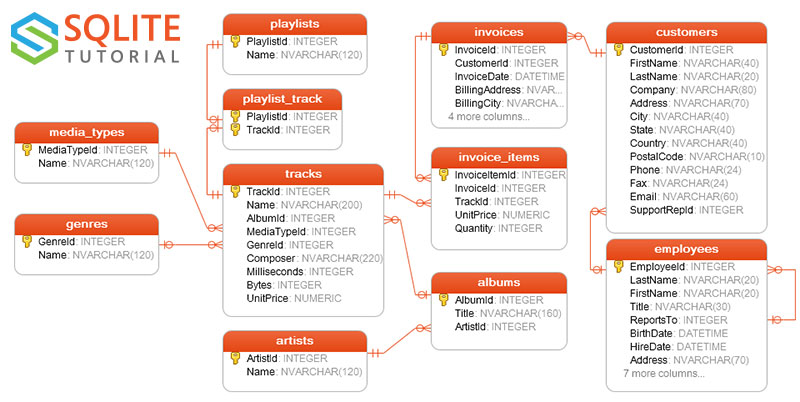

2.13 Práctica 1: SQL
Vamos a utilizar la base de datos Chinook del tutorial de SQLite

Los ejercicios pedidos en Kaggle kaggle.com/gltaboada/sqlite-tutorial-in-r se entregarán preferentemente antes del 14/10 compartiendo un notebook con las soluciones (¡notebooke privado!) con el usuario gltaboada. Antes me tenéis que enviar un email comunicando qué usuario tenéis cada uno. En caso de incidencia me podéis mandar un notebook descargado (.ipynb), o el mecanismo que hayamos acordado previamente.